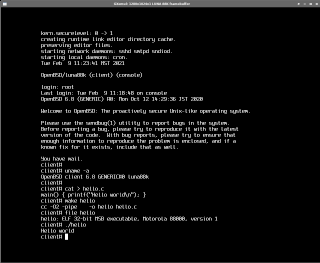
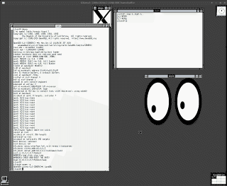
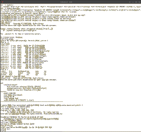
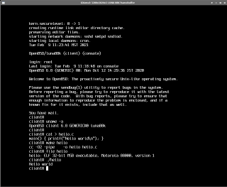
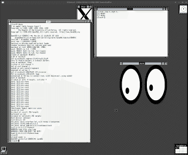
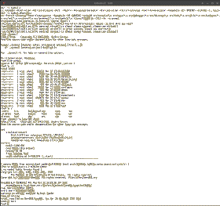

This emulation mode attempts to emulate an OMRON Luna-88K workstation. Note that these were based on Motorola 88000 processors, not 68000.
Originally, they ran OMRON's UniOS. But also of historical interest:
In modern times, the only still maintained and freely available operating system for these machines is OpenBSD/luna88k.
GXemul emulates the following devices:
well enough to run OpenBSD. It is highly likely that running other operating systems (or the original OMRON firmware) will trigger bugs of various kinds in the device implementations.
NOT emulated yet:
The last of the screenshots above shows the OpenBSD/luna88k kernel booting inside GXemul, compiled inside emulated OpenBSD/luna88k running in GXemul on a FreeBSD/amd64 host.
There are a couple of ways to run and/or install OpenBSD in the emulator.
Kenji Aoyama has made available full harddisk images from a real OpenBSD installation. Download the latest such harddisk image and boot program from http://www.nk-home.net/~aoyama/liveimage/, and start the emulator like this:
gxemul -e luna-88k -d liveimage-luna88k-raw-20201206.img boot
To run with a graphical framebuffer, add -X to the command line.
To shut down the machine gracefully, run reboot as root.
To install OpenBSD, you first need to create an empty harddisk image onto which the operating system will be installed:
dd if=/dev/zero of=obsd_luna88k.img bs=1024 count=1 seek=5500000
Then download the ramdisk kernel, a regular kernel, and the boot program:
Start the emulator like this, and install as if you were doing a network (http) install on a real machine:
gxemul -e luna-88k -d obsd_luna88k.img bsd.rd
For networking configuration, enter IPv4 address 10.0.0.1, netmask 255.0.0.0, and skip IPv6 configuration. Default route and DNS nameserver should both be 10.0.0.254.
NOTE: Doing a network install is currently really really slow. It is so slow that it will probably say "stalled" in the download progress reporting, but just leave it on and eventually it will have downloaded everything.
Finally, once the installation finishes, reboot the emulated machine and start again using either the boot loader, or using the regular kernel:
gxemul -e luna-88k -d obsd_luna88k.img boot or gxemul -e luna-88k -d obsd_luna88k.img bsd
Using the boot loader mimics how a real machine would start up OpenBSD on the luna88k. Using the regular kernel has the advantage that it includes symbols, which are useful when debugging the kernel.
To run with a graphical framebuffer, add -X to the command line.
To shut down the machine gracefully, run reboot as root.
Back when GXemul did not emulate the SCSI controller in the LUNA88K machine, the only way to run OpenBSD/luna88k was using root-on-nfs. These instructions can still be used, if you want to do it that way.
Another emulated machine must then be used as the nfs root server, and the emulated LUNA88K machine must boot as a diskless client. To make matters even more complicated, the OpenBSD/luna88k 6.8 RAMDISK kernel has support for Ethernet, but it does not seem to have a driver for nfs included or at least it doesn't work in the emulator. Therefore, a separate OpenBSD ramdisk kernel, e.g. for OpenBSD/sgi, needs to be used to run the final step of the root-on-nfs installation.
Let's get started.
wget http://ftp.eu.openbsd.org/pub/OpenBSD/6.8/luna88k/base68.tgz wget http://ftp.eu.openbsd.org/pub/OpenBSD/6.8/luna88k/comp68.tgz wget http://ftp.eu.openbsd.org/pub/OpenBSD/6.8/luna88k/xbase68.tgz wget http://ftp.eu.openbsd.org/pub/OpenBSD/6.8/luna88k/xfont68.tgz wget http://ftp.eu.openbsd.org/pub/OpenBSD/6.8/luna88k/xserv68.tgz wget http://ftp.eu.openbsd.org/pub/OpenBSD/6.8/luna88k/xshare68.tgz |
gxemul -xe 3max -d nbsd_pmax.img -d base68.tgz -d comp68.tgz -d xbase68.tgz -d xfont68.tgz -d xserv68.tgz -d xshare68.tgz |
echo hostname=server >> /etc/rc.conf echo ifconfig_le0=\"inet 10.0.0.2\" >> /etc/rc.conf echo nameserver 10.0.0.254 >> /etc/resolv.conf echo 10.0.0.254 > /etc/mygate echo /tftpboot -maproot=root -alldirs 10.0.0.3 > /etc/exports echo rpcbind=YES >> /etc/rc.conf echo nfs_server=YES >> /etc/rc.conf echo mountd=YES >> /etc/rc.conf echo bootparamd=YES >> /etc/rc.conf printf "client root=10.0.0.2:/tftpboot swap=10.0.0.2:/tftpboot/swap\n" > /etc/bootparams echo "00:00:0a:10:20:30 client" > /etc/ethers echo 10.0.0.3 client > /etc/hosts cd /tftpboot tar xzf /dev/sd1c tar xzf /dev/sd2c tar xzf /dev/sd3c tar xzf /dev/sd4c tar xzf /dev/sd5c tar xzf /dev/sd6c tar zxfv var/sysmerge/etc.tgz tar zxfv var/sysmerge/xetc.tgz chmod 1777 tmp dd if=/dev/zero of=swap bs=1024 count=262144 echo inet 10.0.0.3 > /tftpboot/etc/hostname.le0 chmod 640 /tftpboot/etc/hostname.le0 echo 10.0.0.254 > /tftpboot/etc/mygate echo nameserver 10.0.0.254 > /tftpboot/etc/resolv.conf echo 127.0.0.1 client localhost > /tftpboot/etc/hosts echo 10.0.0.2:/tftpboot / nfs rw 0 0 > /tftpboot/etc/fstab echo 10.0.0.2:/tftpboot/swap none swap sw,nfsmntpt=/swap >> /tftpboot/etc/fstab halt |
http://ftp.eu.openbsd.org/pub/OpenBSD/6.8/luna88k/bsd http://ftp.eu.openbsd.org/pub/OpenBSD/6.8/luna88k/bsd.mp http://ftp.eu.openbsd.org/pub/OpenBSD/6.8/luna88k/bsd.rd
! Configuration file for running OpenBSD/luna88k diskless with
! a NetBSD/pmax machine as the nfs server.
!
! This config file is for the client.
net(
add_remote("localhost:12444") ! the server
local_port(12445) ! the client
)
machine(
name("client machine")
serial_nr(1)
type("luna88k")
subtype("luna-88k")
! use_x11(1)
! For multiprocessor experiments:
! ncpus(4)
! load("bsd.mp")
! load("bsd.rd")
load("bsd")
)
|
net(
local_port(12444) ! the server
add_remote("localhost:12445") ! the client
)
machine(
name("nfs server")
serial_nr(2)
type("dec")
subtype("5000/200")
disk("nbsd_pmax.img")
)
|
http://ftp.eu.openbsd.org/pub/OpenBSD/6.7/sgi/bsd.rd.IP32
! Configuration file for running OpenBSD/sgi diskless with
! a NetBSD/pmax machine as the nfs server.
!
! This config file is for the client.
net(
add_remote("localhost:12444") ! the server
local_port(12445) ! the client
)
machine(
name("client machine")
serial_nr(1)
type("sgi")
subtype("o2")
use_x11(1)
memory(1024)
load("bsd.rd.IP32")
! load("bsd.IP32")
)
|
in one xterm: gxemul @config_server and then, in another xterm: gxemul @config_client_sgi
ifconfig mec0 10.0.0.3; route add default 10.0.0.254 mount -v 10.0.0.2:/tftpboot /mnt cd /mnt/dev; ./MAKEDEV all; cd /; umount /mnt halt -p |
gxemul @config_clientWhen asked about root device, enter le0.
If you want to run with the graphical framebuffer, uncomment the
use_x11(1) line in config_client first.
Unfortunately, Xorg lacks a driver for wsfb in OpenBSD/luna88k
6.8, which is needed.
You can extract the files
./usr/X11R6/lib/modules/drivers/wsfb_drv.la ./usr/X11R6/lib/modules/drivers/wsfb_drv.so
from the OpenBSD 6.7 xserver distribution file, and use them even if the rest of the OS is version 6.8. If you have extracted the files above, then start X by running startx.
You can experiment with the multiprocessor kernel (bsd.mp), with up to 4 emulated CPUs. It is not as stable as running single-processor, though. Also, the emulator itself is not multithreaded, so all CPUs are emulated using a single host processor, so a higher number of emulated CPUs means a slower total emulation speed.
Assuming you have done the root-on-nfs setup detailed above, uncomment the bsd.mp file in the configuration file, and set ncpus to the number of cpus (1 through 4).
If you want to start the emulator from the command line with multiple processors, use the -n option.
{kind=link}
{kind=link}
{kind=link}
{kind=link}
{kind=link}